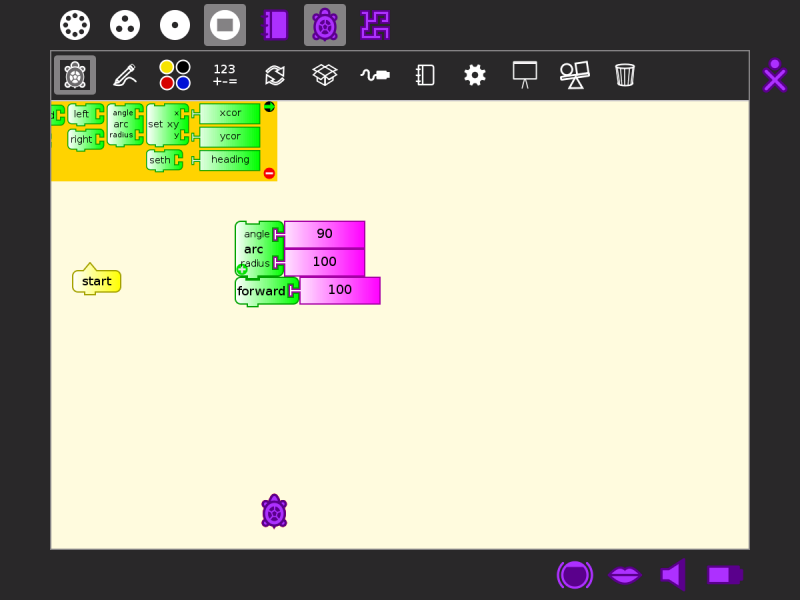

Switching Activities¶
You can switch between Activities in two ways:
- In the Frame, click the icon of the Activity you want to switch to.
- Hold down alt + tab at the same time to cycle through your open Activities until you reach the one you want.
pressing again
pressing again

Note
You can use the Clipboard and the Journal to move data between Activities.